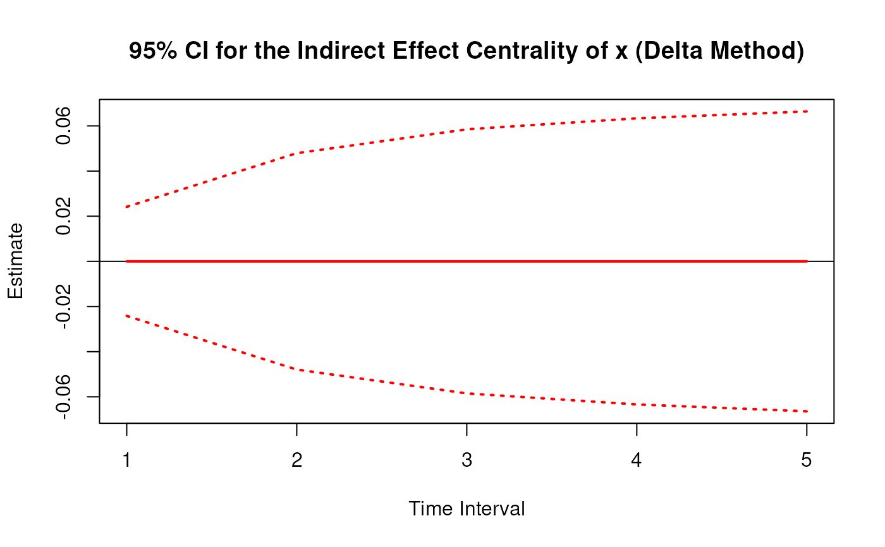
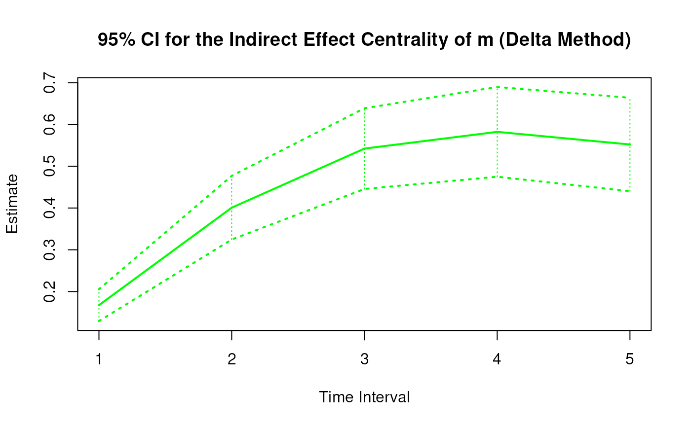
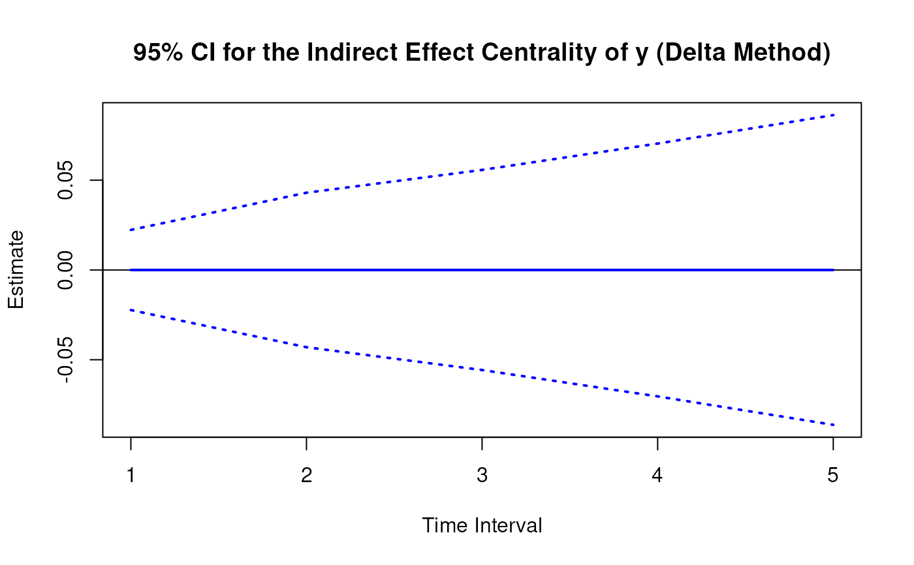
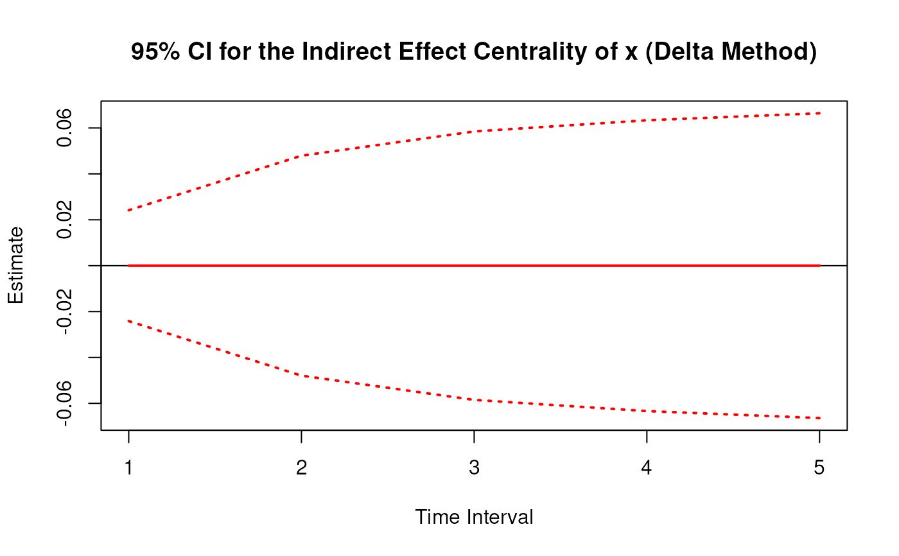
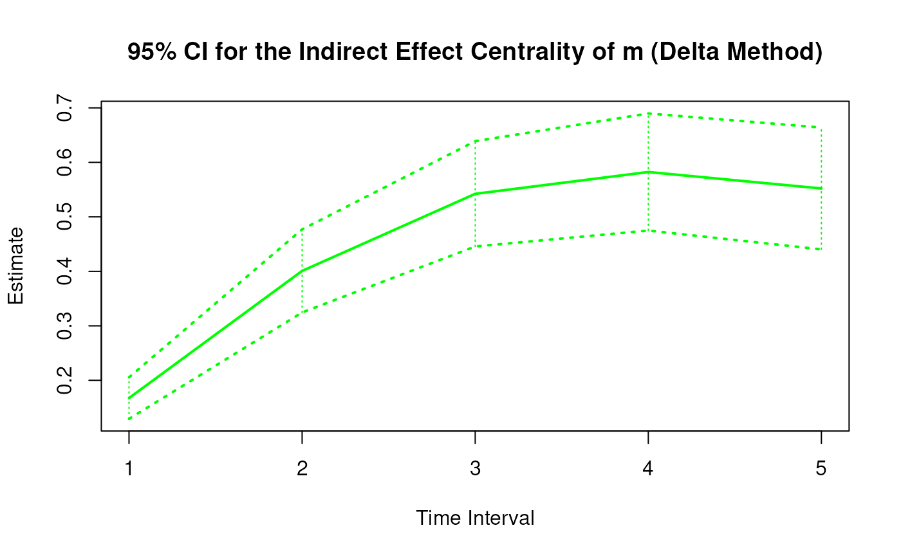
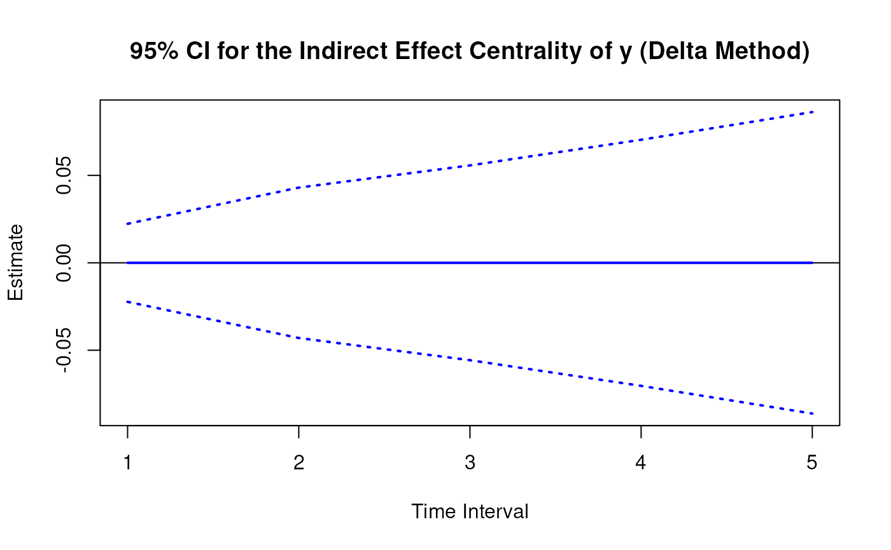

Delta Method Sampling Variance-Covariance Matrix for the Indirect Effect Centrality Over a Specific Time Interval or a Range of Time Intervals
Source:R/cTMed-delta-indirect-central.R
DeltaIndirectCentral.RdThis function computes the delta method sampling variance-covariance matrix for the indirect effect centrality over a specific time interval \(\Delta t\) or a range of time intervals using the first-order stochastic differential equation model's drift matrix \(\boldsymbol{\Phi}\).
Arguments
- phi
Numeric matrix. The drift matrix (\(\boldsymbol{\Phi}\)).
phishould have row and column names pertaining to the variables in the system.- vcov_phi_vec
Numeric matrix. The sampling variance-covariance matrix of \(\mathrm{vec} \left( \boldsymbol{\Phi} \right)\).
- delta_t
Vector of positive numbers. Time interval (\(\Delta t\)).
- ncores
Positive integer. Number of cores to use. If
ncores = NULL, use a single core. Consider using multiple cores when the length ofdelta_tis long.- tol
Numeric. Smallest possible time interval to allow.
Value
Returns an object
of class ctmeddelta which is a list with the following elements:
- call
Function call.
- args
Function arguments.
- fun
Function used ("DeltaIndirectCentral").
- output
A list the length of which is equal to the length of
delta_t.
Each element in the output list has the following elements:
- delta_t
Time interval.
- jacobian
Jacobian matrix.
- est
Estimated indirect effect centrality.
- vcov
Sampling variance-covariance matrix of estimated indirect effect centrality.
Details
See IndirectCentral() more details.
Delta Method
Let \(\boldsymbol{\theta}\) be \(\mathrm{vec} \left( \boldsymbol{\Phi} \right)\), that is, the elements of the \(\boldsymbol{\Phi}\) matrix in vector form sorted column-wise. Let \(\hat{\boldsymbol{\theta}}\) be \(\mathrm{vec} \left( \hat{\boldsymbol{\Phi}} \right)\). By the multivariate central limit theory, the function \(\mathbf{g}\) using \(\hat{\boldsymbol{\theta}}\) as input can be expressed as:
$$ \sqrt{n} \left( \mathbf{g} \left( \hat{\boldsymbol{\theta}} \right) - \mathbf{g} \left( \boldsymbol{\theta} \right) \right) \xrightarrow[]{ \mathrm{D} } \mathcal{N} \left( 0, \mathbf{J} \boldsymbol{\Gamma} \mathbf{J}^{\prime} \right) $$
where \(\mathbf{J}\) is the matrix of first-order derivatives of the function \(\mathbf{g}\) with respect to the elements of \(\boldsymbol{\theta}\) and \(\boldsymbol{\Gamma}\) is the asymptotic variance-covariance matrix of \(\hat{\boldsymbol{\theta}}\).
From the former, we can derive the distribution of \(\mathbf{g} \left( \hat{\boldsymbol{\theta}} \right)\) as follows:
$$ \mathbf{g} \left( \hat{\boldsymbol{\theta}} \right) \approx \mathcal{N} \left( \mathbf{g} \left( \boldsymbol{\theta} \right) , n^{-1} \mathbf{J} \boldsymbol{\Gamma} \mathbf{J}^{\prime} \right) $$
The uncertainty associated with the estimator \(\mathbf{g} \left( \hat{\boldsymbol{\theta}} \right)\) is, therefore, given by \(n^{-1} \mathbf{J} \boldsymbol{\Gamma} \mathbf{J}^{\prime}\) . When \(\boldsymbol{\Gamma}\) is unknown, by substitution, we can use the estimated sampling variance-covariance matrix of \(\hat{\boldsymbol{\theta}}\), that is, \(\hat{\mathbb{V}} \left( \hat{\boldsymbol{\theta}} \right)\) for \(n^{-1} \boldsymbol{\Gamma}\). Therefore, the sampling variance-covariance matrix of \(\mathbf{g} \left( \hat{\boldsymbol{\theta}} \right)\) is given by
$$ \mathbf{g} \left( \hat{\boldsymbol{\theta}} \right) \approx \mathcal{N} \left( \mathbf{g} \left( \boldsymbol{\theta} \right) , \mathbf{J} \hat{\mathbb{V}} \left( \hat{\boldsymbol{\theta}} \right) \mathbf{J}^{\prime} \right) . $$
References
Bollen, K. A. (1987). Total, direct, and indirect effects in structural equation models. Sociological Methodology, 17, 37. doi:10.2307/271028
Deboeck, P. R., & Preacher, K. J. (2015). No need to be discrete: A method for continuous time mediation analysis. Structural Equation Modeling: A Multidisciplinary Journal, 23 (1), 61–75. doi:10.1080/10705511.2014.973960
Pesigan, I. J. A., Russell, M. A., & Chow, S.-M. (2025). Inferences and effect sizes for direct, indirect, and total effects in continuous-time mediation models. Psychological Methods. doi:10.1037/met0000779
Ryan, O., & Hamaker, E. L. (2021). Time to intervene: A continuous-time approach to network analysis and centrality. Psychometrika, 87 (1), 214–252. doi:10.1007/s11336-021-09767-0
See also
Other Continuous-Time Mediation Functions:
BootBeta(),
BootBetaStd(),
BootIndirectCentral(),
BootMed(),
BootMedStd(),
BootTotalCentral(),
DeltaBeta(),
DeltaBetaStd(),
DeltaMed(),
DeltaMedStd(),
DeltaTotalCentral(),
Direct(),
DirectStd(),
Indirect(),
IndirectCentral(),
IndirectStd(),
MCBeta(),
MCBetaStd(),
MCIndirectCentral(),
MCMed(),
MCMedStd(),
MCPhi(),
MCPhiSigma(),
MCTotalCentral(),
Med(),
MedStd(),
PosteriorBeta(),
PosteriorIndirectCentral(),
PosteriorMed(),
PosteriorTotalCentral(),
Total(),
TotalCentral(),
TotalStd(),
Trajectory()
Examples
phi <- matrix(
data = c(
-0.357, 0.771, -0.450,
0.0, -0.511, 0.729,
0, 0, -0.693
),
nrow = 3
)
colnames(phi) <- rownames(phi) <- c("x", "m", "y")
vcov_phi_vec <- matrix(
data = c(
0.002704274, -0.001475275, 0.000949122,
-0.001619422, 0.000885122, -0.000569404,
0.00085493, -0.000465824, 0.000297815,
-0.001475275, 0.004428442, -0.002642303,
0.000980573, -0.00271817, 0.001618805,
-0.000586921, 0.001478421, -0.000871547,
0.000949122, -0.002642303, 0.006402668,
-0.000697798, 0.001813471, -0.004043138,
0.000463086, -0.001120949, 0.002271711,
-0.001619422, 0.000980573, -0.000697798,
0.002079286, -0.001152501, 0.000753,
-0.001528701, 0.000820587, -0.000517524,
0.000885122, -0.00271817, 0.001813471,
-0.001152501, 0.00342605, -0.002075005,
0.000899165, -0.002532849, 0.001475579,
-0.000569404, 0.001618805, -0.004043138,
0.000753, -0.002075005, 0.004984032,
-0.000622255, 0.001634917, -0.003705661,
0.00085493, -0.000586921, 0.000463086,
-0.001528701, 0.000899165, -0.000622255,
0.002060076, -0.001096684, 0.000686386,
-0.000465824, 0.001478421, -0.001120949,
0.000820587, -0.002532849, 0.001634917,
-0.001096684, 0.003328692, -0.001926088,
0.000297815, -0.000871547, 0.002271711,
-0.000517524, 0.001475579, -0.003705661,
0.000686386, -0.001926088, 0.004726235
),
nrow = 9
)
# Specific time interval ----------------------------------------------------
DeltaIndirectCentral(
phi = phi,
vcov_phi_vec = vcov_phi_vec,
delta_t = 1
)
#> Call:
#> DeltaIndirectCentral(phi = phi, vcov_phi_vec = vcov_phi_vec,
#> delta_t = 1)
#>
#> Indirect Effect Centrality
#>
#> variable interval est se z p 2.5% 97.5%
#> 1 x 1 0.0000 0.0123 0.0000 1 -0.0242 0.0242
#> 2 m 1 0.1674 0.0194 8.6167 0 0.1293 0.2055
#> 3 y 1 0.0000 0.0114 0.0000 1 -0.0223 0.0223
# Range of time intervals ---------------------------------------------------
delta <- DeltaIndirectCentral(
phi = phi,
vcov_phi_vec = vcov_phi_vec,
delta_t = 1:5
)
plot(delta)


 # Methods -------------------------------------------------------------------
# DeltaIndirectCentral has a number of methods including
# print, summary, confint, and plot
print(delta)
#> Call:
#> DeltaIndirectCentral(phi = phi, vcov_phi_vec = vcov_phi_vec,
#> delta_t = 1:5)
#>
#> Indirect Effect Centrality
#>
#> variable interval est se z p 2.5% 97.5%
#> 1 x 1 0.0000 0.0123 0.0000 1 -0.0242 0.0242
#> 2 m 1 0.1674 0.0194 8.6167 0 0.1293 0.2055
#> 3 y 1 0.0000 0.0114 0.0000 1 -0.0223 0.0223
#> 4 x 2 0.0000 0.0245 0.0000 1 -0.0479 0.0479
#> 5 m 2 0.4008 0.0389 10.3027 0 0.3246 0.4771
#> 6 y 2 0.0000 0.0219 0.0000 1 -0.0430 0.0430
#> 7 x 3 0.0000 0.0298 0.0000 1 -0.0585 0.0585
#> 8 m 3 0.5423 0.0493 11.0007 0 0.4456 0.6389
#> 9 y 3 0.0000 0.0284 0.0000 1 -0.0557 0.0557
#> 10 x 4 0.0000 0.0323 0.0000 1 -0.0634 0.0634
#> 11 m 4 0.5823 0.0548 10.6249 0 0.4749 0.6897
#> 12 y 4 0.0000 0.0359 0.0000 1 -0.0704 0.0704
#> 13 x 5 0.0000 0.0339 0.0000 1 -0.0664 0.0664
#> 14 m 5 0.5521 0.0571 9.6771 0 0.4403 0.6639
#> 15 y 5 0.0000 0.0440 0.0000 1 -0.0862 0.0862
summary(delta)
#> Call:
#> DeltaIndirectCentral(phi = phi, vcov_phi_vec = vcov_phi_vec,
#> delta_t = 1:5)
#>
#> Indirect Effect Centrality
#>
#> variable interval est se z p 2.5% 97.5%
#> 1 x 1 0.0000 0.0123 0.0000 1 -0.0242 0.0242
#> 2 m 1 0.1674 0.0194 8.6167 0 0.1293 0.2055
#> 3 y 1 0.0000 0.0114 0.0000 1 -0.0223 0.0223
#> 4 x 2 0.0000 0.0245 0.0000 1 -0.0479 0.0479
#> 5 m 2 0.4008 0.0389 10.3027 0 0.3246 0.4771
#> 6 y 2 0.0000 0.0219 0.0000 1 -0.0430 0.0430
#> 7 x 3 0.0000 0.0298 0.0000 1 -0.0585 0.0585
#> 8 m 3 0.5423 0.0493 11.0007 0 0.4456 0.6389
#> 9 y 3 0.0000 0.0284 0.0000 1 -0.0557 0.0557
#> 10 x 4 0.0000 0.0323 0.0000 1 -0.0634 0.0634
#> 11 m 4 0.5823 0.0548 10.6249 0 0.4749 0.6897
#> 12 y 4 0.0000 0.0359 0.0000 1 -0.0704 0.0704
#> 13 x 5 0.0000 0.0339 0.0000 1 -0.0664 0.0664
#> 14 m 5 0.5521 0.0571 9.6771 0 0.4403 0.6639
#> 15 y 5 0.0000 0.0440 0.0000 1 -0.0862 0.0862
confint(delta, level = 0.95)
#> variable interval 2.5 % 97.5 %
#> 1 x 1 -0.02415288 0.02415288
#> 2 m 1 0.12933502 0.20549601
#> 3 y 1 -0.02230998 0.02230998
#> 4 x 2 -0.04792202 0.04792202
#> 5 m 2 0.32455600 0.47705260
#> 6 y 2 -0.04301280 0.04301280
#> 7 x 3 -0.05848447 0.05848447
#> 8 m 3 0.44564411 0.63886875
#> 9 y 3 -0.05571230 0.05571230
#> 10 x 4 -0.06335985 0.06335985
#> 11 m 4 0.47489827 0.68973759
#> 12 y 4 -0.07039028 0.07039028
#> 13 x 5 -0.06640976 0.06640976
#> 14 m 5 0.44027850 0.66391851
#> 15 y 5 -0.08623631 0.08623631
plot(delta)



# Methods -------------------------------------------------------------------
# DeltaIndirectCentral has a number of methods including
# print, summary, confint, and plot
print(delta)
#> Call:
#> DeltaIndirectCentral(phi = phi, vcov_phi_vec = vcov_phi_vec,
#> delta_t = 1:5)
#>
#> Indirect Effect Centrality
#>
#> variable interval est se z p 2.5% 97.5%
#> 1 x 1 0.0000 0.0123 0.0000 1 -0.0242 0.0242
#> 2 m 1 0.1674 0.0194 8.6167 0 0.1293 0.2055
#> 3 y 1 0.0000 0.0114 0.0000 1 -0.0223 0.0223
#> 4 x 2 0.0000 0.0245 0.0000 1 -0.0479 0.0479
#> 5 m 2 0.4008 0.0389 10.3027 0 0.3246 0.4771
#> 6 y 2 0.0000 0.0219 0.0000 1 -0.0430 0.0430
#> 7 x 3 0.0000 0.0298 0.0000 1 -0.0585 0.0585
#> 8 m 3 0.5423 0.0493 11.0007 0 0.4456 0.6389
#> 9 y 3 0.0000 0.0284 0.0000 1 -0.0557 0.0557
#> 10 x 4 0.0000 0.0323 0.0000 1 -0.0634 0.0634
#> 11 m 4 0.5823 0.0548 10.6249 0 0.4749 0.6897
#> 12 y 4 0.0000 0.0359 0.0000 1 -0.0704 0.0704
#> 13 x 5 0.0000 0.0339 0.0000 1 -0.0664 0.0664
#> 14 m 5 0.5521 0.0571 9.6771 0 0.4403 0.6639
#> 15 y 5 0.0000 0.0440 0.0000 1 -0.0862 0.0862
summary(delta)
#> Call:
#> DeltaIndirectCentral(phi = phi, vcov_phi_vec = vcov_phi_vec,
#> delta_t = 1:5)
#>
#> Indirect Effect Centrality
#>
#> variable interval est se z p 2.5% 97.5%
#> 1 x 1 0.0000 0.0123 0.0000 1 -0.0242 0.0242
#> 2 m 1 0.1674 0.0194 8.6167 0 0.1293 0.2055
#> 3 y 1 0.0000 0.0114 0.0000 1 -0.0223 0.0223
#> 4 x 2 0.0000 0.0245 0.0000 1 -0.0479 0.0479
#> 5 m 2 0.4008 0.0389 10.3027 0 0.3246 0.4771
#> 6 y 2 0.0000 0.0219 0.0000 1 -0.0430 0.0430
#> 7 x 3 0.0000 0.0298 0.0000 1 -0.0585 0.0585
#> 8 m 3 0.5423 0.0493 11.0007 0 0.4456 0.6389
#> 9 y 3 0.0000 0.0284 0.0000 1 -0.0557 0.0557
#> 10 x 4 0.0000 0.0323 0.0000 1 -0.0634 0.0634
#> 11 m 4 0.5823 0.0548 10.6249 0 0.4749 0.6897
#> 12 y 4 0.0000 0.0359 0.0000 1 -0.0704 0.0704
#> 13 x 5 0.0000 0.0339 0.0000 1 -0.0664 0.0664
#> 14 m 5 0.5521 0.0571 9.6771 0 0.4403 0.6639
#> 15 y 5 0.0000 0.0440 0.0000 1 -0.0862 0.0862
confint(delta, level = 0.95)
#> variable interval 2.5 % 97.5 %
#> 1 x 1 -0.02415288 0.02415288
#> 2 m 1 0.12933502 0.20549601
#> 3 y 1 -0.02230998 0.02230998
#> 4 x 2 -0.04792202 0.04792202
#> 5 m 2 0.32455600 0.47705260
#> 6 y 2 -0.04301280 0.04301280
#> 7 x 3 -0.05848447 0.05848447
#> 8 m 3 0.44564411 0.63886875
#> 9 y 3 -0.05571230 0.05571230
#> 10 x 4 -0.06335985 0.06335985
#> 11 m 4 0.47489827 0.68973759
#> 12 y 4 -0.07039028 0.07039028
#> 13 x 5 -0.06640976 0.06640976
#> 14 m 5 0.44027850 0.66391851
#> 15 y 5 -0.08623631 0.08623631
plot(delta)


